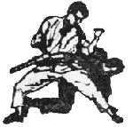

Instruction | Training
Our schools offer instruction & training in the following:
Kenpo Jiu-Jitsu
The ultimate in practical, effective, un-armed self-defense and traditional martial arts
Shootfighting®
The ultimate in MMA (Mixed-Martial Arts) for sport fighting, training, conditioning & competition
Private and Group Instruction at Tracy’s Karate & Martial Arts
At Tracy’s all students receive private instruction as well as unlimited group instruction in their martial arts training. This is done at a cost that is no greater than group lessons alone would be at other karate & martial arts schools. There are many reasons for this, not the least of which is you can learn much faster with private instruction.
Many people feel self-conscious in a group, especially when they are learning something new. They do not want to look stupid if they make a mistake. This self-consciousness detracts from learning. With Tracy’s private instruction the student can concentrate better, without distraction from others watching. All of the student’s attention can be devoted to learning instead of worrying about what others will think of them.
Each student is unique in his or her learning patterns. Every student has different natural abilities and talents. The pace or method that works well for one student may not work for another. A professional Tracy’s instructor in private sessions will assess the individual student and determine the best learning method for them. They will present new material at a pace the student can absorb, repeat and review when necessary. The Tracy’s instructor is trained to deal with any special physical limitations a student may have and develop and emphasize those abilities at which the student can excel. Some material may be more difficult to learn than other techniques. With Tracy’s method of private instruction, the student is given the time and attention they need to master the techniques without worrying about what the rest of the group is doing. If the student is exceptionally adept, perhaps coming to the martial arts from a background of other athletic training, they can progress as rapidly as they can without being held back at the group’s pace.
We don’t all work an 8 to 5 shift. Nor do we all have our physical peaks at the same time of day. You may feel more energetic in the evening or maybe you like to get your workout done right after work before you head for home and relaxation. Or, you may be at your physical peak in the morning or afternoon. Private instruction at Tracy’s gives you control over your schedule. You pick the time that is best for your body and your lifestyle. You don’t have to miss out if you don’t fit into someone else’s time schedule, or when it’s only convenient for the instructor or a popular time for the masses.
Professional Instruction
Instructors at Tracy’s are not only skilled and highly knowledgeable in the martial art styles they teach, but they are also trained professionals. They have chosen to be teachers because they wish to share their knowledge with those who have the need and desire to learn self-defense and the martial arts. Tracy instructors are interested in and concerned with the student’s success as an individual and do not hold back material out of fear that their student will be able to out-do them. Their success is our success.
Tracy instructors are true professionals and do not stoop to petty trickery, such as teaching only part of a technique, or moves incorrectly to some students whom they do not wish to progress, or teaching the moves differently to different students so none will ever know the complete system.
There is also never a fear among Tracy instructors that a student will learn enough to found their own school. To the contrary, independence is encouraged—it is the mark of professionalism that builds character and expands the martial arts we teach.
The Kenpo Jiu-Jitsu and Shootfighting® martial arts systems are so extensive that instructors will always have something new to teach their student, and Tracy’s professional instructors have a genuine desire to teach as much as the student can learn.
The Tracy instructor will always be fair in their assessments. Belts are earned through standard posted requirements—not through favor, attendance, "automatic" time progressions, or worst of all--simply paying a required fee in order to advance to higher levels of learning and instruction.
Tracy’s—Confidence Builders
Remember your last job presentation? Or if you’re still in school, think of your last exam. If you weren’t prepared you entered the room nervous and upset, doubting you could succeed. If you had all your facts organized, you were eager to show what you could do. In life you may not know when you will be called upon to defend yourself or put your skills into action, but because of your training at Tracy’s you will be confident that when the time arrives you will be able to perform successfully.
Your Kenpo Jiu-Jitsu martial arts & self defense training will enable you to face dangerous situations without panicking. Knowing you are prepared will give you confidence so you can calmly assess the situation, and focus your efforts for maximum efficacy.
Training with Tracy’s Kenpo Karate develops confidence in your physical abilities as well as in your mental judgment and ability to take in and assess situations. This confidence developed from true self defense martial arts training will carry through with all of your life’s activities.
The business professional with Tracy’s martial arts training exudes confidence in all situations. The college or high school student finds himself or herself walking tall, cognitive of their surroundings and aware of their persona. Youth and younger children come out of their shells, not just to join their peers, but also to become their leaders. The boisterous, hyperactive child becomes calm with assurance of their abilities.
How does this happen?
Kenpo—The Intelligent Art of Self-Defense

The martial arts of Tracy’s Kenpo does not rely on brute strength to overpower the attacker, but rather teaches the student to use his mental abilities to assess the situation and decide what the best course of action should be. A student of Tracy’s Kenpo Jiu-Jitsu is instructed on how to assess a situation before it has escalated to a danger point.
Like an expert Chess player, the Tracy Kenpo practitioner learns how to predict what moves his opponent has available to him and what moves he will then take to counter those moves. This is the very heart of martial sciences known today more commonly as martial arts... applied physics of motion, anatomy, etc... knowing that the body moves in predictable patterns and full knowledge of what those patterns are and how to counter them.
The Tracy’s Kenpo practitioner does not get “taken by surprise.” He or she is trained to be always alert and observant. They are totally aware of their surroundings and how to use the terrain to their advantage; what locations will make them more vulnerable; what they can use to their advantage.
Using applied physics of motion, brute strength is made not a necessity, so Tracy’s Kenpo Karate can be used successfully by not only large men, but by average sized and small people as well, including women and children. Practicing Tracy’s Kenpo will improve strength for all and improve reflexes and mental alertness.